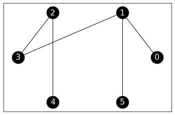
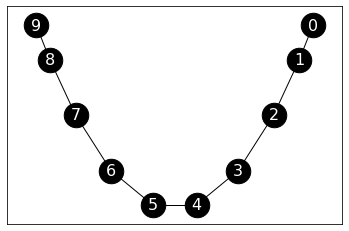
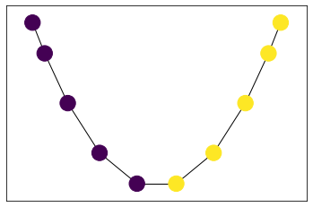
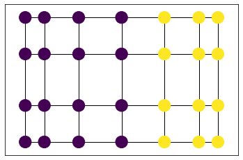
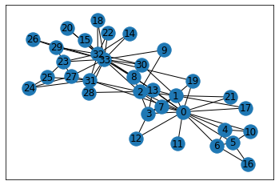
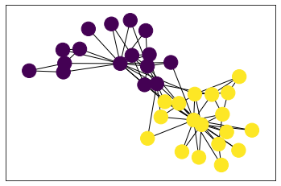
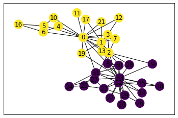

4.5. Application to graph partitioning#
In this section, we use the spectral properties of the Laplacian of a graph to identify “good” cuts.
4.5.1. How to cut a graph#
Let \(G=(V, E)\) be a graph. Imagine that we are interested in finding a good cut. That is, roughly speaking, we seek to divide it into two disjoint subsets of vertices to achieve two goals simultaneously:
the two sets have relatively few edges between them
neither set is too small.
We will show that the Laplacian eigenvectors provide useful information in order to perform this kind of graph cutting. First we formulate the problem formally.
Cut ratio One way to make the graph cutting more precise is to consider the following combinatorial quantity.
DEFINITION (Isoperimetric Number) Let \(G=(V, E)\) be a graph. A cut is a bipartition \((S, S^c)\) of the vertices of \(G\), where \(S\) and \(S^c = V\setminus S\) are non-empty subsets of \(V\). The corresponding cutset is the set of edges between \(S\) and \(S^c\).
This is also known as the edge boundary of \(S\) (denoted \(\partial S\)). The size of the cutset is then \(|E(S,S^c)|\), the number of edges between \(S\) to \(S^c\). The cut ratio of \((S,S^c)\) is defined as
and the isoperimetric number (or Cheeger constant) of \(G\) is the smallest value this quantity can take on \(G\), that is,
\(\natural\)
In words: the cut ratio is attempting to minimize the number of edges across a cut, while penalizing cuts with a small number of vertices on either side. These correspond to the goals above and we will use this criterion to assess the quality of graph cuts.
Why do we need the denominator? If we were to minimize only the numerator \(|E(S,S^c)|\) over all cuts (without the deonominator in \(\phi(S)\)), we would get what is known as the minimum cut (or min-cut) problem. That problem is easier to solve. In particular, it can be solved using a beautiful randomized algorithm. However, it tends to produce unbalanced cuts, where one side is much smaller than the other. This is not what we want here.
EXAMPLE: (A Random Tree) We illustrate the definitions above on an a tree, that is, a connected graph with no cycle. The function networkx.random_tree() can produce a random one. Here we use a seed for reproducibility. Again, we use \(0,\ldots,n-1\) for the vertex set.
G_tree = nx.random_tree(n=6, seed=111)
Show code cell source
nx.draw_networkx(G_tree, pos=nx.circular_layout(G_tree),
node_size=600, node_color="black",
font_size=16, font_color="white")

Suppose we take \(S = \{0,1,2,3\}\). Then \(S^c = \{4,5\}\) and
The cut ratio is then
A better cut is given by \(S = \{0,1,5\}\). In that case \(S^c = \{2,3,4\}\),
and
This is also equal to \(\phi_G\). Indeed, in a connected graph with \(n\) vertices, the numerator is at least \(1\) and the denominator is at most \(n/2\), which is achieved here. (See Exercise 3.41.) \(\lhd\)
Cheeger’s inequality A key result of spectral graph theory establishes a quantitative relation between the isoperimetric number and the second smallest Laplacian eigenvalue.
THEOREM (Cheeger Inequality) Let \(G = (V, E)\) be a graph with \(n = |V|\) vertices and maximum degree \(\bar{\delta}\). Let \(0 = \mu_1 \leq \mu_2 \leq \cdots \leq \mu_n\) be its Laplacian eigenvalues. Then
\(\sharp\)
We only prove the easy direction, \(\mu_2 \leq 2 \phi_G\), which shows explicitly how the connection between \(\mu_2\) and \(\phi_G\) comes about.
Proof idea: To show that \(\mu_2 \leq 2 \phi_G\), we find an appropriate test vector to plug into the extremal characterization of \(\mu_2\) and link it to \(\phi_G\).
Proof: Recall that, from the Variational Characterization of \(\mu_2\), we have
Constructing a good test vector: We construct an \(\mathbf{x}\) that provides a good upper bound. Let \(\emptyset \neq S \subset V\) be a proper, nonempty subset of \(V\) such that \(0 < |S| \leq \frac{1}{2}|V|\). We choose a vector that takes one value on \(S\) and a different value on \(S^c\). Taking a cue from the two-component example above we consider the vector with entries
This choice ensures that
as well
To evaluate the Laplacian quadratic form, we note that \(\mathbf{x}\) takes the same value everywhere on \(S\) (and on \(S^c\)). Hence the sum over edges reduces to
where we used that, for each edge \(\{i, j\} \in E\) where \(x_i \neq x_j\), one endvertex is in \(S\) and one endvertex is in \(S^c\).
Using the definition of the isoperimetric number: So for this choice of \(\mathbf{x}\) we have
where we used that \(|S^c| \geq n/2\). This inequality holds for any \(S\) such that \(0 < |S| \leq \frac{1}{2}|V|\). In particular, it holds for the \(S\) producing the smallest value. Hence, by the definition of the isoperimetric number (see Exercise 3.9), we get
as claimed. \(\square\)
NUMERICAL CORNER: (A random tree) We return to the random tree example above. We claimed that \(\phi_G = 1/3\). The maximum degree is \(\bar{\delta} = 3\). We now compute \(\mu_2\). We first compute the Laplacian matrix.
phi_G = 1/3
max_deg = 3
We now compute \(\mu_2\). We first compute the Laplacian matrix.
L_tree = nx.laplacian_matrix(G_tree).toarray()
print(L_tree)
[[ 1 -1 0 0 0 0]
[-1 3 0 -1 0 -1]
[ 0 0 2 -1 -1 0]
[ 0 -1 -1 2 0 0]
[ 0 0 -1 0 1 0]
[ 0 -1 0 0 0 1]]
w, v = LA.eigh(L_tree)
mu_2 = np.sort(w)[1]
print(mu_2)
0.32486912943335355
We check Cheeger’s inequality. The left-hand side is:
(phi_G ** 2) / (2 * max_deg)
0.018518518518518517
The right-hand side is:
2 * phi_G
0.6666666666666666
\(\unlhd\)
A graph-cutting algorithm We only proved the easy direction of the Cheeger Inequality. It is however useful to sketch the other direction, as it contains an important algorithmic idea.
An algorithm: The input is the graph \(G=(V,E)\). Let \(\mathbf{y}_2 \in \mathbb{R}^n\) be the unit-norm eigenvector of the Laplacian matrix \(L\) associated to its second smallest eigenvalue \(\mu_2\), i.e., \(\mathbf{y}_2\) is the Fiedler vector. There is one entry of \(\mathbf{y}_2 = (y_{2,1}, \ldots, y_{2,n})^T\) for each vertex of \(G\). We use these entries to embed the graph \(G\) in \(\mathbb{R}\): vertex \(i\) is mapped to \(y_{2,i}\). Now order the entries \(y_{2,\pi(1)}, \ldots, y_{2,\pi(n)}\), where \(\pi\) is a permutation, that is, a re-ordering of \(1,\ldots,n\). Specifically, \(\pi(1)\) is the vertex corresponding to the smallest entry of \(\mathbf{y}_{2}\), \(\pi(2)\) is the second smallest, and so on. We consider only cuts of the form
and we output the cut \((S_k, S_k^c)\) that minimizes the cut ratio
for the \(k \leq n-1\).
What can be proved rigorously (but we will not do this here) is that there exists some \(k^* \in\{1,\ldots,n-1\}\) such that
which implies the Cheeger Inequality. The middle inequality is the non-trivial one.
Since \( \mu_2 \leq 2 \phi_G \), this implies that
So \(\phi(S_{k^*})\) may not achieve \(\phi_G\), but we do get some guarantee on the quality of the cut produced by this algorithm.
See, for example, [Kel, Lecture 3, Section 4.2] for more details.
The above provides a heuristic to find a cut with provable guarantees. We implement it next. In contrast, the problem of finding a cut which minimizes the cut ratio is known to be NP-hard, that is, computationally intractable.
NUMERICAL CORNER: We implement the graph cutting algorithm above.
We now implement our heuristic in Python. We first write an auxiliary function that takes as input an adjacency matrix, an ordering of the vertices and a value \(k\). It returns the cut ratio for the first \(k\) vertices in the order.
def cut_ratio(A, order, k):
n = A.shape[0] # number of vertices
edge_boundary = 0 # initialize size of edge boundary
for i in range(k+1): # for all vertices before cut
for j in range(k+1,n): # for all vertices after cut
edge_boundary += A[order[i],order[j]] # add one if {i,j} in E
denominator = np.minimum(k+1, n-k-1)
return edge_boundary/denominator
Using the cut_ratio function, we first compute the Laplacian, find the second eigenvector and corresponding order of vertices. Then we compute the cut ratio for every \(k\). Finally we output the cut (both \(S_k\) and \(S_k^c\)) corresponding to the minimum, as a tuple of arrays.
def spectral_cut2(A):
n = A.shape[0] # number of vertices
# laplacian
degrees = A.sum(axis=1)
D = np.diag(degrees)
L = D - A
# spectral decomposition
w, v = LA.eigh(L)
order = np.argsort(v[:,np.argsort(w)[1]]) # index of entries in increasing order
# cut ratios
phi = np.zeros(n-1) # initialize cut ratios
for k in range(n-1):
phi[k] = cut_ratio(A, order, k)
imin = np.argmin(phi) # find best cut ratio
return order[0:imin+1], order[imin+1:n]
We will illustrate this on the path graph.
n = 10
G = nx.path_graph(n)
Show code cell source
nx.draw_networkx(G,
node_size=600, node_color='black',
font_size=16, font_color='white',
pos=nx.spectral_layout(G)
)

We apply our spectral-based cutting algorihtm.
A = nx.adjacency_matrix(G).toarray()
s, sc = spectral_cut2(A)
print(s)
print(sc)
[0 1 2 3 4]
[5 6 7 8 9]
To help with vizualizing the output, we write a function coloring the vertices according to which side of the cut they are on.
def viz_cut(G, s, layout):
n = G.number_of_nodes()
assign = np.ones(n)
assign[s] = 2
nx.draw_networkx(G, node_color=assign, pos=layout(G), with_labels=False)
viz_cut(G, s, nx.spectral_layout)

Let’s try it on the grid graph. Can you guess what the cut will be?
G = nx.grid_2d_graph(4,7)
A = nx.adjacency_matrix(G).toarray()
s, sc = spectral_cut2(A)
viz_cut(G, s, nx.spectral_layout)

\(\unlhd\)
How to compute the second smallest eigenvalue? There is one last piece of business to take care of. How do we compute the Fiedler vector? Previously, we have seen an iterative approach based on taking powers of the matrix to compute the largest eigenvalue and corresponding eigenvector of a positive semidefinite matrix. We show here how to adapt this approach to our task at hand. The details are left as a series of exercises.
First, we modify the Laplacian matrix to invert the order of the eigenvalues without changing the eigenvectors themselves. This way the smallest eigenvalues will become the largest ones. By the Laplacian and Maximum Degree Lemma, \(\mu_i \leq 2 \bar{\delta}\) for all \(i=1,\ldots,n\), where recall that \(\bar{\delta}\) is the largest degree of the graph.
LEMMA (Inverting the Order of Eigenvalues) For \(i=1,\ldots,n\), let \(\lambda_i = 2 \bar{\delta} - \mu_i\). The matrix \(M = 2 \bar{\delta} I_{n\times n} - L\) is positive semidefinite and has eigenvector decomposition
\(\flat\)
Second, our goal is now to compute the second largest eigenvalue of \(M\), not the largest one. But we already know the largest one. It is \(\lambda_1 = 2\bar{\delta} - \mu_1 = 2 \bar{\delta}\) and its associated eigenvector is \(\mathbf{y}_1 = \frac{1}{\sqrt{n}}(1,\ldots,1)^T\). It turns out that we can simply apply power iteration with a starting vector that is orthogonal to \(\mathbf{y}_1\). Such a vector can be constructed by taking a random vector and subtracting its orthogonal projection on \(\mathbf{y}_1\).
LEMMA (Power Iteration for the Second Largest Eigenvalue) Assume that \(\mu_1 < \mu_2 < \mu_3\). Let \(\mathbf{x} \in \mathbb{R}^n\) be a vector such that \(\langle \mathbf{y}_1, \mathbf{x} \rangle = 0\) and \(\langle \mathbf{y}_2, \mathbf{x} \rangle > 0\). Then
as \(k \to +\infty\). If instead \(\langle \mathbf{y}_2, \mathbf{x} \rangle < 0\), then the limit is \(- \mathbf{y}_2\). \(\flat\)
The relaxation perspective Here is another intuitive way to shed light on the effectiveness of spectral partitioning. Assume we have a graph \(G = (V,E)\) with an even number \(n = |V|\) of vertices. Suppose we are looking for the best balanced cut \((S,S^c)\) in the sense that it minimizes the number of edges \(|E(S,S^c)|\) across it over all cuts with \(|S| = |S^c| = n/2\). This is known as the minimum bisection problem.
Mathematically, we can formulate this as the followign discrete optimization problem:
The condition \(\mathbf{x} \in \{-1,+1\}^n\) implicitly assigns each vertex \(i\) to \(S\) (if \(x_i = -1\)) or \(S^c\) (if \(x_i=+1\)). The condition \(\sum_{i=1}^n x_i = 0\) then ensures that the cut \((S,S^c)\) is balanced, that is, that \(|S| = |S^c|\). Under this interpretation, the term \((x_i - x_j)^2\) is either \(0\) if \(i\) and \(j\) are on the same side of the cut, or \(4\) if they are on opposite sides.
This is a hard computational problem. One way to approach such a discrete optimization problem is to relax it. That is, to turn it into an optimization problem with continuous variables. Specifically here we consider instead
The optimal objective value of this relaxed problem is necessarily smaller or equal than the original one. Indeed any solution to the original problem satisfies the constraints of the relaxation. Up to a scaling factor, this last problem is equivalent to the variational characterization of \(\mu_2\). Indeed, in Exercise 3.40, you are asked to prove that the minimum achieved is \(\frac{\mu_2 n}{4}\).
Back to community detection We return to the Karate Club dataset from the lecture.
G = nx.karate_club_graph()
n = G.number_of_nodes()
A = nx.adjacency_matrix(G).toarray()
Show code cell source
nx.draw_networkx(G)

We seek to find natural sub-communities. We use the spectral properties of the Laplacian as described in the lectures.
We use our spectral_cut2 and viz_cut functions to compute a good cut and vizualize it.
s, sc = spectral_cut2(A)
print(s)
print(sc)
[18 26 20 14 29 22 24 15 23 25 32 27 9 33 31 28 30 8]
[ 2 13 1 19 7 3 12 0 21 17 11 4 10 6 5 16]
viz_cut(G, s, nx.spring_layout)

It is not trivial to assess the quality of the resulting cut. But this particular example has a known ground-truth community structure (which partly explains its widespread use). Quoting from Wikipedia:
A social network of a karate club was studied by Wayne W. Zachary for a period of three years from 1970 to 1972. The network captures 34 members of a karate club, documenting links between pairs of members who interacted outside the club. During the study a conflict arose between the administrator “John A” and instructor “Mr. Hi” (pseudonyms), which led to the split of the club into two. Half of the members formed a new club around Mr. Hi; members from the other part found a new instructor or gave up karate. Based on collected data Zachary correctly assigned all but one member of the club to the groups they actually joined after the split.
This ground truth is the following.
truth = np.array([2, 2, 2, 2, 2, 2, 2, 2, 1, 1, 2, 2, 2, 2, 1,
1, 2, 2, 1, 2, 1, 2, 1, 1, 1, 1, 1, 1, 1, 1, 1, 1, 1, 1])
nx.draw_networkx(G, node_color=truth, pos=nx.spring_layout(G))

You can check that our cut perfectly matches the ground truth.
4.5.2. Weighted case and variants#
As we mentioned before, the concepts we have introduced can also be extended to weighted graphs, that is, graphs with weights on the edges.
Laplacian matrix for weighted graphs In the case of a weighted graph, the Laplacian can then be defined as follows.
DEFINITION (Laplacian for Weighted Graph) Let \(G = (V, E, w)\) be a weighted graph with \(n = |V|\) vertices and adjacency matrix \(A\). Let \(D = \mathrm{diag}(\delta(1), \ldots, \delta(n))\) be the weighted degree matrix. The Laplacian matrix associated to \(G\) is defined as \(L = D - A\). \(\natural\)
It can be shown (Try it!) that the Laplacian quadratic form satisfies in the weighted case
for \(\mathbf{x} = (x_1,\ldots,x_n)^T \in \mathbb{R}^n\).
As a positive semidefinite matrix (Exercise: Why?), the weighted Laplacian has an orthonormal basis of eigenvectors with nonnegative eigenvalues that satisfy the variational characterization we derived above. In particular, if we denote the eigenvalues \(0 = \mu_1 \leq \mu_2 \leq \cdots \leq \mu_n\), it follows from Courant-Fischer that
If we generalize the cut ratio as
for \(\emptyset \neq S \subset V\) and let
it can be shown (Try it!) that
as in the unweighted case.
Normalized Laplacian Other variants of the Laplacian matrix have also been studied. We introduced the normalized Laplacian next. Recall that in the weighted case, the degree is defined as \(\delta(i) = \sum_{j:\{i,j\} \in E} w_{i,j}\).
DEFINITION (Normalized Laplacian) The normalized Laplacian of \(G = (V,E,w)\) with adjacency matrix \(A\) and degree matrix \(D\) is defined as
\(\natural\)
Using our previous observations about multiplication by diagonal matrices, the entries of \(\mathcal{L}\) are
We also note the following relation to the Laplacian matrix:
We check that the normalized Laplacian is symmetric:
It is also positive semidefinite. Indeed,
by the properties of the Laplacian matrix.
Hence by the Spectral Theorem, we can write
where the \(\mathbf{z}_i\)s are orthonormal eigenvectors of \(\mathcal{L}\) and the eigenvalues satisfy \( 0 \leq \eta_1 \leq \eta_2 \leq \cdots \leq \eta_n. \)
One more observation: because the constant vector is eigenvector of \(L\) with eigenvalue \(0\), we get that \(D^{1/2} \mathbf{1}\) is an eigenvector of \(\mathcal{L}\) with eigenvalue \(0\). So \(\eta_1 = 0\) and we set
which makes \(\mathbf{z}_1\) into a unit norm vector.
The relationship to the Laplacian matrix immediately implies (see Exercise 3.54) that
for \(\mathbf{x} = (x_1,\ldots,x_n)^T \in \mathbb{R}^n\).
Through the change of variables
Courant-Fischer gives this time (Exercise: Why?)
For a subset of vertices \(S \subseteq V\), let
which we refer to as the volume of \(S\). It is measure of the size of \(S\) weighted by the degrees.
If we consider the normalized cut ratio, or bottleneck ratio,
for \(\emptyset \neq S \subset V\) and let
it can be shown (Try it!) that
The normalized cut ratio is similar to the cut ratio, except that the notion of balance of the cut is measured in terms of volume. Note that this concept is also useful in the unweighted case.
We will an application of the normalized Laplacian later in this chapter.